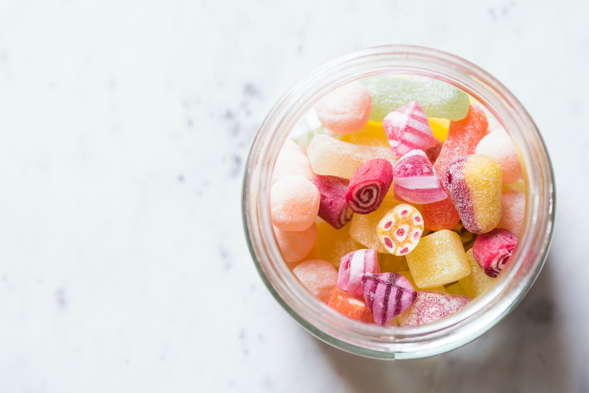

Candy

hard candy
This is an old recipe from my childhood. Many people have memories of
cutting this candy with their mother's and grandmothers
Ingredients
- 2 cups white sugar
- 1 cup water
- ¾ cup light corn syrup
- ½ teaspoon peppermint extract
- 1 drop red food coloring (Optional)
- ⅛ cup confectioners' sugar
Steps
-
In a heavy 2 quart saucepan, combine the sugar, water and corn syrup.
Cook, stirring constantly until the sugar is dissolved; then cook
without stirring, lowering the heat and cooking more slowly during the
last few minutes, to the hard crack stage (300 degrees F), If sugar
crystals form on sides of pan, wipe them off with a damp brush.
-
Remove from heat, add oil flavoring and enough food coloring to color;
stir only to mix. Pour into 2 well buttered 9 inch pans. Set one pan of
candy over a sauce pan containing hot water (unless you have a helper to
help cut the candy). As soon as the other pan of candy is cool enough to
handle, cut it with scissors into 1-inch strips. Then snip the strips
into pieces. Work fast. Drop the pieces onto a buttered baking sheet. If
the candy cools too quickly, set it on a saucepan over hot water to
soften it, but if it gets sticky, return at once to the work counter.
-
Toss in a small amount of powdered sugar to keep from sticking together.
Repeat with the second pan of candy.